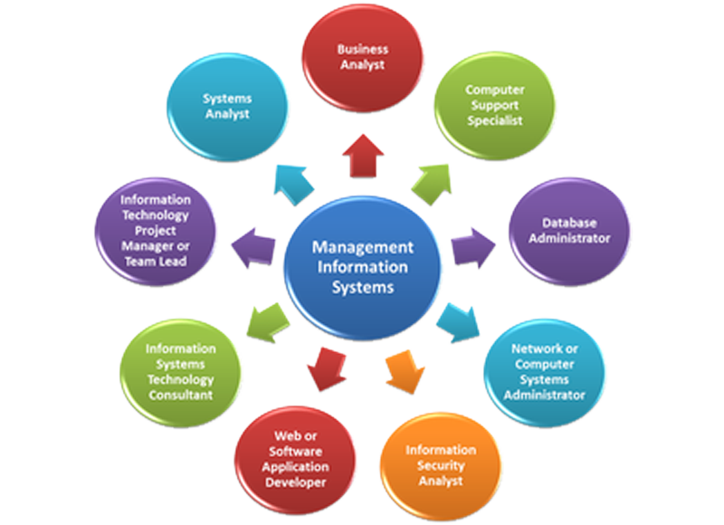

MIS & AI EthicsWebsite OverviewAlexis WinstonOctober 29, 2026Home | AI Usage | Security | About Us Understanding MIS and Artificial Intelligence Management Information Systems (MIS) and Artificial Intelligence (AI) are important tools that help organizations collect, organize, and utilize information effectively. MIS mixes people, technology, data, and business processes to aid in better decision-making. AI strengthens these distinct systems by analyzing key information, recognizing patterns, and automating typically routine tasks. All in all, MIS and AI can easily improve efficiency, reduce usual errors, and aid organizations in making informed decisions in a rapidly changing tech environment. MIS Topic Overview
|